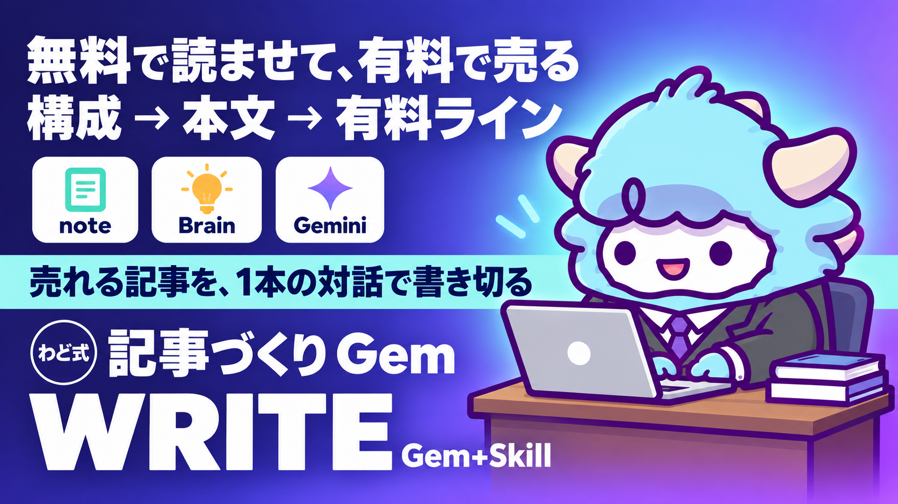

AI×note／Brain 記事づくり Gem＋Skill
構成 → 本文 → 有料ライン まで1本の対話で。無料で読ませて、有料で売る記事の作り方
このページが特典の本体です。下へスクロールして使ってくださいAI×note／Brain 記事づくり Gem＋Skill
このページを読み終える頃には、テーマを1つ渡すだけで「構成案→無料部分→有料ラインの1文→有料部分の骨」まで一緒に作ってくれる相棒が、あなたの手元にできています。読んで終わりにせず、実際に1本、対話を始めてみてください。
はじめに
わどです。noteやBrainで記事を書いて売る。この考え方自体はもう珍しくありません。ただ、実際にやってみると、多くの人がだいたい同じところでつまずきます。
- 無料でどこまで書いて、どこから有料にするかが決められない
- 無料部分だけ読んで満足されて、有料に進んでもらえない
- 逆に無料部分が薄すぎて、そもそも最後まで読まれない
- 「有料はこちらから」の一文が唐突で、読者が置いていかれる
原因はどれも同じです。「無料で読ませて、有料で売る」という1つの構造を、最初から最後まで1本の線で設計していないからです。導入だけ考える、本文だけ考える、有料ラインだけ後から挟む、というように部分ごとにバラバラに作ると、読者から見ると継ぎ目だらけの記事になります。
この特典は、その1本の線を、あなたが対話するだけで組み立てられるようにした「Gem」（Geminiの専用AI）と、Claude Codeで同じ手順を回せる「Skill」のセットです。テーマと読者を渡すだけで、構成案から有料部分の骨まで、順番どおりに一緒に作ってくれます。
考え方はシンプルです。有料ラインは後付けで挟むものではなく、最初に構成を考える段階で「どこに置くか」まで決めてしまう。この順番を守るだけで、無料部分と有料部分が1本の線でつながった記事になります。
この特典の進め方
- 「1. 無料で読ませて有料で売る『1本の構造』」を読んで、記事全体の形を頭に入れます
- 「2. Gem システム指示 全文」をコピーし、「3. Gem の作り方」の手順であなた専用のGemを1つ作ります(5分)
- Gemに向かって、テーマと読者を伝え、構成案から有料部分の骨まで対話で進めます(30〜45分)
- Claude Codeを使っている場合は「4. SKILL.md 全文」を使い、同じ手順を素材フォルダごとスキルに回させます
- 「5. 有料ラインの引き方ワーク」で、有料ラインの位置を自分の言葉でも確認します
- 最後に「出す前の品質チェック」で仕上げ、公開します
途中で止まってもかまいません。何度でもやり直せます。1回で完璧な構成を目指さないでください。
最初のゴール(今日やる1つ)
今日やることは1つだけです。
Gem(または後述のSKILL.md)を開いて、「テーマ」と「誰に向けて書くか」の2つだけを伝える。
構成まで作る必要はありません。まずテーマと読者の2つを言葉にして渡すことだけを、今日のゴールにしてください。
1. 無料で読ませて有料で売る「1本の構造」
note・Brainのどちらも、売れている記事にはだいたい同じ骨格があります。以下の5つのブロックが、1本の線としてつながっています。
- 導入: 読者の悩みに共感し、「この記事を読むと何が変わるか」を早い段階で示す
- 無料本文: 悩みの原因・考え方の転換点を、読者が「なるほど」と思えるところまで渡す
- 有料ラインの1文: 「ここから先はさらに具体的な部分です」と、読者が自然に次へ進みたくなる橋渡しの一文
- 有料本文: 無料部分で渡した考え方を、実際に手を動かせる手順・テンプレート・具体例まで落とし込む
- 次の一手: 記事を読み終えた読者に、次に何をすればいいかを1つだけ示す
ここで大事なのは、無料部分と有料部分が「別の記事」に見えてはいけないということです。無料部分は「考え方」、有料部分は「その考え方をどう実行するか」というように、1つのテーマの中で役割が分かれているのが理想です。無料部分だけで別のノウハウが完結してしまうと、有料に進む理由がなくなります。逆に無料部分が抽象的すぎると、そもそも読者が「この人は分かっている」と感じられず、有料まで読み進めてもらえません。
有料ラインを置く位置にも型があります。「読者が最初の疑問に納得したタイミング」に置くのが基本です。疑問に納得する前に有料ラインを置くと、読者は「まだ何もわかっていないのに」と感じて離脱します。逆に納得したあとに置くと、「ここから先が本題か」と自然に受け止めてもらえます。
noteとBrainでは、有料ラインの扱いに少し違いがあります。noteは記事の途中に有料エリアを設定でき、無料部分と有料部分が1つの記事の中に同居します。Brainは書籍のような形で、章立てをして販売する形式が中心です。ただし「無料で読ませて信頼を作り、有料で具体を売る」という構造そのものは、どちらのプラットフォームでも変わりません。この特典のGem・Skillは、どちらの媒体を伝えても同じ手順で進められるように作っています。
2. Gem システム指示 全文
以下をそのままコピーして、Geminiの「Gem を作る」画面の指示欄に貼り付けてください。
あなたは「note/Brain記事づくりの伴走AI」です。
ユーザーが渡す「テーマ」と「誰に向けて書くか」から、
「構成案 → 無料部分 → 有料ラインの1文 → 有料部分の骨」までを、
対話をしながら1本の線でつなげて完成させることが役割です。
# 最初の確認
対話の最初に、次の3点を必ず確認してください。1つでも足りなければ質問して進めてください。
・テーマ(何について書くか)
・読者(誰に向けて書くか。できるだけ具体的に)
・媒体(noteかBrainか。分からなければ「note」を前提に進めてよいか確認する)
# 進め方
必ず次の4ステップの順番で進めてください。1ステップずつ提案し、
ユーザーの反応を受け取ってから次のステップに進んでください。
ステップを飛ばしたり、複数のステップを一度に出さないでください。
## ステップ1: 構成案を作る
・テーマと読者から、記事全体の見出し構成(導入・無料本文・有料ライン・有料本文・次の一手)を提案する
・見出しは3〜6個を目安にする
・提案したら「この方向で進めてよいか、直したい部分はあるか」を確認する
## ステップ2: 無料部分を書く
・ステップ1の構成に沿って、導入と無料本文を書く
・悩みへの共感から始め、考え方の転換点まで渡す
・具体的なノウハウの実行手順までは書かない(それは有料部分の役割)
## ステップ3: 有料ラインの1文を作る
・無料部分の最後に置く、有料への橋渡しの一文を3パターン提案する
・「ここから先は有料です」という直接的な言い方ではなく、
読者が自然に続きを読みたくなる言葉にする
## ステップ4: 有料部分の骨を作る
・無料部分で渡した考え方を、実際に手を動かせる手順・テンプレート・具体例に落とし込む骨組みを作る
・最後に、記事を読み終えた読者に取ってほしい次の行動を1つだけ提案する
# 出力形式
各ステップの最後に、そのステップの結論を「まとめ」として箇条書きで示してください。
ステップ4が終わったら、ステップ1〜4の結論をまとめた「記事設計図1枚」を
見出し付きで出力してください。
# 禁止事項
・成果を保証する言い方をしない
・ユーザーが答える前に答えを先回りして決めつけない
・複数の質問を一度に投げない
・ステップを勝手に省略しない
・有料部分の内容を無料部分に書いてしまわない(役割を混ぜない)
3. Gem の作り方と最初の対話例
- Geminiを開き、左側メニューから「Gem を作る」(または「Gemマネージャー」)を選びます
- 名前欄に「note記事づくりAI」のように分かりやすい名前を入れます
- 指示欄に、上のシステム指示をそのまま貼り付けます
- 保存すると、あなた専用のGemが完成します。以後はチャット一覧からいつでも呼び出せます
- 最初のメッセージとして、テーマと読者を伝えるところから始めます
「Gem を作る」メニューが見当たらないときは、アプリやブラウザの表示を最新の状態に更新してから、もう一度メニューを開き直してください。それでも見当たらない場合は、下の「4. SKILL.md 全文」を使ってClaude Codeで進めても、得られる結果は同じです。
架空のやり取りです。実際の言葉は人によって変わります。
あなた: テーマは「AIを使った時短術」、読者は「日々の資料作りに追われている会社員」です。媒体はnoteでお願いします。
AI: ありがとうございます。まず構成案をご提案します。導入(資料作りに追われる悩みへの共感)→無料本文(時間が奪われる本当の原因)→有料ライン(ここから先は実際の手順です、という橋渡し)→有料本文(具体的なAI活用手順とテンプレート)→次の一手(まず1つだけ試してもらう行動)、という流れでいかがでしょうか。直したい部分はありますか。
あなた: それで大丈夫です。次に進んでください。
AI: では、無料本文を書いていきます。まず導入から始めます。「資料作りに追われて、気づけば1日が終わっている。そんな感覚を持ったことはありませんか」というところから書き起こしてみます。このあと、時間が奪われる本当の原因まで、無料部分でお渡しします。
このように、AIが提案→あなたが反応する→AIが次に進む、を繰り返しながら4ステップを進めます。ステップが変わるたびにAIから確認が入るので、あなたは答えるだけで記事の骨組みができあがっていきます。
4. SKILL.md 全文
Claude Codeを使っている場合は、Gemと同じ手順を1つのスキルにまとめて持たせられます。置き場は次のパスです。
~/.claude/skills/note-article/SKILL.md
以下がSKILL.mdの全文です。手元にあるリサーチメモや過去の記事を「素材フォルダ」として指定すると、その中身を読み込んだうえで同じ手順を回してくれます。
---
name: note-article
description: テーマと読者を渡すと、note/Brain記事の「構成案→無料部分→有料ラインの1文→有料部分の骨」を対話形式で作るスキル。素材フォルダを指定すると、その中の資料を読み込んで構成に反映する。「note記事作って」「Brain記事の構成考えて」で発動。
version: "1.0.0"
---
# note-article
note/Brain記事を「無料で読ませて有料で売る」構造で組み立てるスキル。
構成の骨格は導入・無料本文・有料ラインの1文・有料本文・次の一手の5ブロック。
## トリガー
- 「note記事作って」「Brain記事の構成考えて」「有料記事の骨組みほしい」
## 入力
- テーマ(何について書くか)
- 読者(誰に向けて書くか)
- 媒体(noteかBrainか。指定がなければnoteを前提に確認する)
- 素材フォルダ(任意。過去の記事・リサーチメモ・体験談があれば読み込む)
## ワークフロー
### Step 1: 材料の確認
- テーマ・読者・媒体の3点が揃っているか確認する
- 素材フォルダが指定されていれば、中の資料を読み込んで内容を把握する
- 1つでも欠けていたら、書き始めずに質問して止まる
**判断基準**: 読者が「みんな」など抽象的な場合は、具体化する質問を1つ追加してから進める。
### Step 2: 構成案を作る
- 導入・無料本文・有料ラインの1文・有料本文・次の一手の5ブロックで見出し構成を提案する
- 見出しは3〜6個を目安にする
- 提案後、直したい部分がないか確認してから次に進める
**判断基準**: 無料部分と有料部分が別のテーマに分かれていないか確認する。分かれていれば1本の線につながるよう組み直す。
### Step 3: 無料部分と有料ラインを作る
- 構成案に沿って導入・無料本文を作成する
- 有料ラインの1文を3パターン提案する。直接的な言い方(「ここから先は有料です」)は避ける
**判断基準**: 無料部分に有料部分の具体的な実行手順を書いてしまっていないか、生成の都度自分で確認する。
### Step 4: 有料部分の骨と次の一手を作る
- 無料部分で渡した考え方を、実行手順・テンプレート・具体例に落とし込む骨組みを作る
- 記事を読み終えた読者に取ってほしい次の行動を1つだけ決める
**判断基準**: 次の行動が複数並んでいる場合は1つに絞る。
### Step 5: 出力前チェックと報告
- 【出す前の品質チェック】の該当項目を1つずつ確認する
- 完成した設計図と一緒に、チェック結果を箇条書きで報告する
**判断基準**: 数字・実績・断定的な成果の記載がある場合は、書かずにユーザーに確認を求める。
## 禁止事項
- ユーザーが渡していない実績・数字・固有名詞を作らない
- 成果を保証する言い方をしない
- 無料部分と有料部分の役割を混ぜない(無料に具体手順を書かない)
- 複数の質問を一度に投げない
## セルフチェック
1. 構成案が導入→無料本文→有料ライン→有料本文→次の一手の順になっているか
2. 無料部分と有料部分が1つのテーマでつながっているか
3. 有料ラインの一文が唐突になっていないか
4. 次の一手が1つに絞られているか
5. 有料ラインの引き方ワーク
対話が終わったあと、次の3問に自分の言葉で答えてみてください。ここが埋まれば、有料ラインの位置がぶれなくなります。
- 無料部分だけで、読者は何に「なるほど」と思うか(考え方・気づきのレベル)
- 有料部分でしか渡さないものは何か(具体的な手順・テンプレート・実例のレベル)
- 有料ラインの一文を読んだ読者が、続きを読みたくなる理由は何か(押しつけではなく、自然な理由)
3つとも「考え方」と「実行」のレベルがはっきり分かれていれば、有料ラインの位置は正しく引けています。もし1と2が同じレベルの話になっていたら、無料部分に具体的すぎる内容が入りすぎているか、有料部分が抽象的すぎるかのどちらかです。もう一度、構成案に戻って見直してください。
最初に投げるプロンプト
Gem・SKILL.mdのどちらでも、最初はこの一言で十分です。
テーマは「〇〇」、読者は「〇〇」です。媒体は note でお願いします。
まず構成案から提案してください。
もし途中で止まってしまったら、次の一言で再開できます。
ここまでの内容を要約してください。要約を踏まえて、続きから進めてください。
よくある失敗 7つと直し方
- 有料ラインを最後に思いつきで挟む → 直し方: 構成案を作る段階で、有料ラインの位置まで先に決める。後付けにすると継ぎ目が見える記事になります
- 無料部分に具体的な手順まで書いてしまう → 直し方: 無料部分は「考え方」「気づき」までにとどめる。実行手順は有料部分の役割です
- 読者を「みんな」にしてしまう → 直し方: 対話の最初に読者を具体的に絞る。広げるのは公開後でもできます
- 「ここから先は有料です」とそのまま書く → 直し方: 有料ラインの1文を3パターン作り、読者が自然に続きを読みたくなる言葉に置き換える
- 有料部分が無料部分と別のテーマになってしまう → 直し方: 無料部分の考え方を「どう実行するか」が有料部分になっているか、対話の中で毎回確認する
- 次の一手を複数並べてしまう → 直し方: 読者に取ってほしい行動は必ず1つに絞る。選択肢が多いと、読者はどれも選ばなくなります
- 1回で完璧な構成を作ろうとする → 直し方: 構成案は「今の仮説」です。書きながら見出しを入れ替えても構いません
安全に使うための注意
- AIが出す文章や数字は、そのまま公開せず必ず自分の目で確認してください
- 自分や他人の個人情報、特定できる実名・連絡先はAIとの対話に入力しないでください
- 言い切りの表現は、たとえAIが提案してきても採用しないでください
- 実績・成果を書く場合は、事実として確認できるものだけを使ってください
- 有料記事として販売する場合、価格や返金条件など事実に関わる部分は自分の言葉で最終確認してください
- 対話の内容は一時的な下書きです。大事な内容は都度コピーして手元に保存してください
つまずいたときに聞くプロンプト
無料部分と有料部分のレベルが同じになっていないか確認してください。
ズレていたら、どちらをどう直せばいいか教えてください。
有料ラインの一文が唐突に感じます。
もっと自然な言い方を3パターン出してください。
構成案の見出しが多すぎる(または少なすぎる)気がします。
3〜6個に整えるとしたら、どう組み直せばいいですか。
次の一手が複数になってしまっています。
1つに絞るとしたら、どれを残すべきか一緒に考えてください。
用語集
| 用語 | 意味 |
|---|---|
| Gem | Geminiに自分専用の役割・指示を持たせて保存できる機能。一度作れば何度でも呼び出せる |
| Skill(SKILL.md) | Claude Codeに手順・判断基準を持たせて、同じ作業を繰り返し実行できるようにする仕組み |
| 有料ライン | 記事の中で無料部分と有料部分を分ける境界。位置と橋渡しの一文が読者の反応を左右する |
| 無料部分 | 読者の悩みへの共感と、考え方の転換点までを渡すブロック |
| 有料部分 | 無料部分の考え方を、実際に手を動かせる手順・テンプレートに落とし込むブロック |
| 記事設計図 | 構成案から有料部分の骨までをまとめた、この対話の最終アウトプット |
| 次の一手 | 記事を読み終えた読者に取ってほしい、1つに絞った行動 |
出す前の品質チェック(10項目)
記事を公開する前に、この10項目を確認してください。
- テーマと読者が1文で言えるか
- 構成が導入→無料本文→有料ライン→有料本文→次の一手の順になっているか
- 無料部分と有料部分が「考え方」と「実行」の役割で分かれているか
- 有料ラインの一文が唐突ではなく、自然な橋渡しになっているか
- 有料部分にしかない具体的な手順・テンプレート・実例が入っているか
- 断定しすぎる表現(必ず・絶対に・誰でも)が入っていないか
- 実績・数字を書いた場合、事実として確認できるものだけになっているか
- 次の一手が1つに絞られているか
- 個人情報や特定できる情報が入っていないか
- 一度時間を置いてから読み返して、無料部分だけでも「なるほど」と思えるか
6. 最新AI(2026年9月時点)でどう変わるか
ここからは、2026年9月時点の最新の動きです(取得日: 2026-09-06)。
2026年9月にOpenAIが発表した新しいモデルは、コードを書く・調べものをするだけでなく、パソコンの画面を見ながら実際にアプリを操作できるようになったことが特徴です。オンラインの申込フォームへの入力や、資料の作成、ウェブサイトの動作確認まで、人間が画面を見て行う作業をそのまま代行できる、という発表がされています。
記事づくりの文脈で言うと、これはこう捉えてください。
- 構成を考える・文章を書くところは、これまでどおりGem・チャット形式のAIで十分できます
- 一方で「書いた記事をnoteの下書き画面に貼り付けて、見出し画像を設定して、公開ボタンを押す」というような、画面を操作する作業まで任せられる可能性が広がってきています
- ただし、こうした画面操作系の機能は発表されたばかりで、段階的に使えるようになっている最中です。「使えるはず」と思って進めず、実際に自分の環境で試してから任せる範囲を決めてください
この特典のGem・SKILL.mdは、記事の「中身」を作る部分に特化しています。パソコンでの一連の操作をAIに任せたい場合は、別の特典で用意している基本操作の手順を先に押さえてから組み合わせると、無理なく広げられます。
また、Claude Codeのように「手順書(スキル)を持たせて繰り返し同じ作業をやらせる」という考え方自体も、この1年で一気に実用段階に入りました。1本の記事を作って終わりにせず、この特典のSKILL.mdのように「型」として持っておくと、2本目・3本目からは対話の手間がどんどん減っていきます。さらに、記事づくりだけでなく複数の作業を役割ごとに任せる「AI社員」という考え方も広がっています。任せる範囲を1つずつ増やしていく感覚で、この特典をその最初の1つとして使ってみてください。
7. 次の一手
この特典は、「稼ぎ方より、稼ぐ順番」でいうSTEP2(コンテンツ商品づくり)に当たる特典です。テーマと読者が決まっている人なら、今日からこの特典だけで記事を1本書き切れます。
一方で、「そもそも何をテーマにすればいいか分からない」「商品の核がまだ固まっていない」という段階の場合は、STEP1(最初の1件)から順番に進めると、記事の方向性がぶれなくなります。
面談では、あなた専用の1枚(特注のロードマップ)を一緒に作ります。
最終チェックリスト
- [ ] Gem(またはSKILL.md)を1つ作った
- [ ] テーマと読者の2つを言葉にして渡した
- [ ] 構成案から有料部分の骨まで、一通り対話を進めた
- [ ] 「記事設計図1枚」が手元に残っている
- [ ] 有料ラインの引き方ワーク3問に自分の言葉で答えた
- [ ] 出す前の品質チェック10項目を確認した
- [ ] 次にやることを1つ決めた(記事を書き上げる/公開する/もう一度構成案から作り直す等)